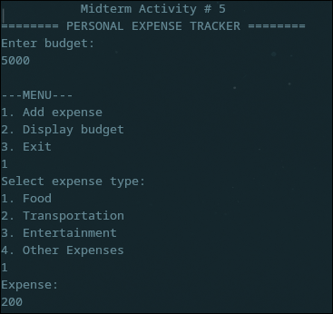
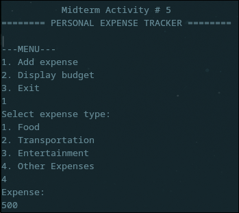
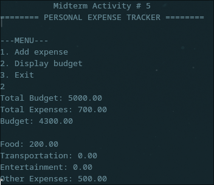

Activity Link
🔗 Canvas.com - OOP - Personal Expense Tracker
import java.util.Scanner;
public class ExpenseTrackerMelencio {
public static void main(String[] args) {
Scanner scanner = new Scanner(System.in);
float budget = 0;
float[] totalExpenses = new float[4];
// Main program loop
while (true) {
try {
// Display program title
program_title();
// Get initial budget if not set
if (budget == 0) budget = get_budget(scanner);
// Check if expenses exceed budget
System.out.println(check_balance(scanner, budget, totalExpenses));
// Show menu options
System.out.println("---MENU---\n" +
"1. Add expense\n" +
"2. Display budget\n" +
"3. Exit");
// Process menu selection
switch (scanner.nextInt()) {
case 1:
get_expense(scanner, totalExpenses);
break;
case 2:
show_budget(budget, totalExpenses);
break;
case 3:
System.out.println("Exiting program...");
return;
default:
System.out.println("Entry not in menu selection");
}
}
catch (Exception e) {
System.out.println(e);
}
scanner.nextLine();
}
}
// Print program title
static void program_title() {
System.out.println(" Midterm Activity # 5 ");
System.out.println("======== PERSONAL EXPENSE TRACKER ========");
}
// Get user budget input
static float get_budget(Scanner scanner) {
System.out.println("Enter budget: ");
return scanner.nextFloat();
}
// Check if expenses exceed budget
static String check_balance(Scanner scanner, float budget, float[] totalExpenses) {
float total = 0;
for (int i = 0; i < 4; i++) total += totalExpenses[i];
return (total > budget) ? "WARNING: Total expense is over budget" : "";
}
// Add new expense to category
static void get_expense(Scanner scanner, float[] totalExpenses) {
while (true) {
System.out.println("Select expense type:\n" +
"1. Food\n" +
"2. Transportation\n" +
"3. Entertainment\n" +
"4. Other Expenses");
int input = scanner.nextInt();
if (0 < input && input < 5) {
System.out.println("Expense: ");
totalExpenses[input-1] += scanner.nextFloat();
return;
}
else System.out.println("Invalid expense type");
}
}
// Display budget and expenses
static void show_budget(float budget, float[] totalExpenses) {
float total = 0;
for (int i = 0; i < 4; i++) total += totalExpenses[i];
System.out.println(String.format("Total Budget: %.2f\n" +
"Total Expenses: %.2f\n" +
"Budget: %.2f",
budget, total, (budget - total)));
System.out.println(String.format("\nFood: %.2f\n" +
"Transportation: %.2f\n" +
"Entertainment: %.2f\n" +
"Other Expenses: %.2f",
totalExpenses[0], totalExpenses[1],
totalExpenses[2], totalExpenses[3]));
}
}



Explanation/Learnings
This activity is much more simplified than the previous activity, as I've only used static functions instead of class functions, this allowed for a much more succinct script, but lacks expandability